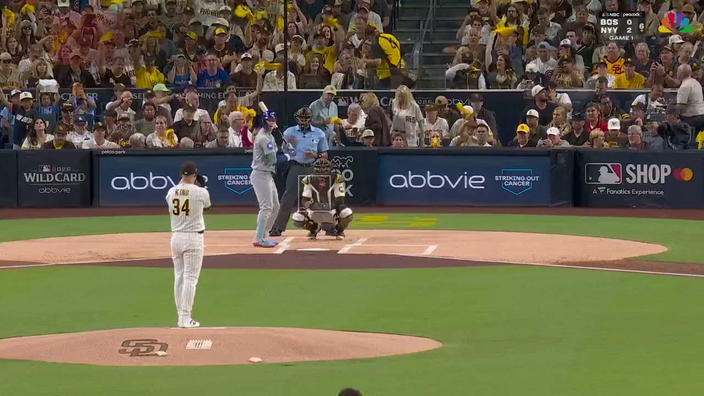
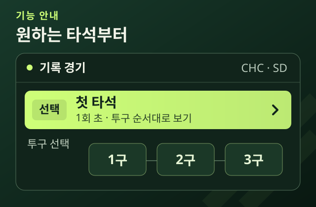
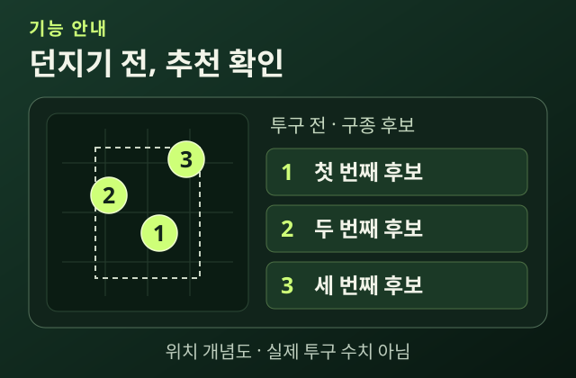
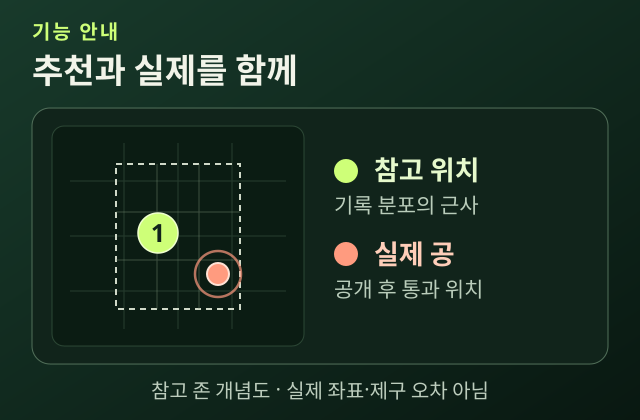

MLB · RECORDED
CHC vs SD
1회 초 · 4투구 하이라이트
4투구 하이라이트 · 약 24초
BEYOND THE BOX SCORE
다음 공,
다음 공,
무엇이 최선일까?
기록으로 계산한 추천과 실제 선택.
한 구에 담긴 경기 상황을 함께 읽습니다.
2026 NL WILD CARD · GAME 1
2026 NL WILD CARD / GAME 1
현지 2026.09.29 · 한국 09.30 · PETCO PARK
시카고 컵스 @ 샌디에이고 파드리스
안타 한 개로,
모든 판단을 끝내지 않도록.
경기 상황과 선택을 팬이 이해하도록.
추천을 먼저 보고, 실제 결과를 확인합니다.
-

기능 안내 그림 · 실제 화면 아님 01 / SELECT한 타석을 고르다.
저장된 경기의 타석과 공을 고릅니다.
그 공을 던지기 전의 경기 상황이 보입니다.
-

기능 안내 그림 · 실제 화면 아님 02 / RECOMMEND다음 공의 후보.
그 공을 던지기 전 정보만으로 계산해 둔 추천 구종 후보를 먼저 봅니다.
-

기능 안내 그림 · 실제 화면 아님 03 / COMPARE추천과 실제 공.
실제 구종과 판정을 확인합니다.
추천과 나란히 놓고 한 구씩 봅니다.
저장된 MLB 경기 기록으로 재생하는 관전 서비스입니다. 추천 비중은 구종 선택의 비중이며 결과 확률과 다릅니다.
이제, 한 구를
직접 살펴보세요.
실제 MLB 기록 · 저장 추천 · 한 구씩 비교
아래 ‘서비스 열기’ 버튼으로 바로 들어갈 수 있어요.